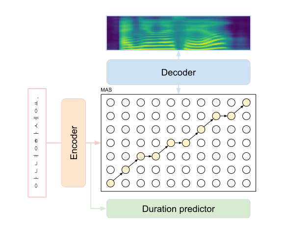
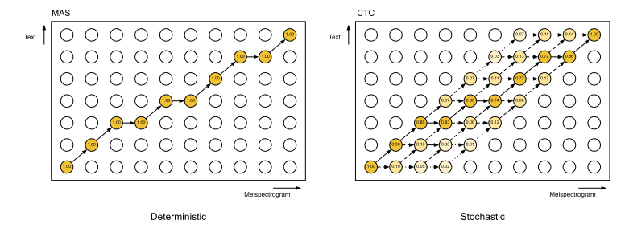

Glow-TTS experiments demo
Reference
Glow-TTS: A Generative Flow for Text-to-Speech via Monotonic Alignment Search
WaveGrad: Estimating Gradients for Waveform Generation
Connectionist Temporal Classification: Labelling Unsegmented Sequence Data with Recurrent Neural Networks
Glow-TTS experiments
Abstract
Glow-TTS is a non-autoregressive text-to-speech(TTS) model without any guidance about alignment such as external aligners. Glow-TTS uses Monotonic Alignment Search(MAS) to calculate the best path matching between text sequence and melspectrogram. However, MAS is inefficient and unstable because it searches only one optimal path. Therefore, I propose a more efficient and stable learning method by introducing Connectionist Temporal Classification(CTC) instead of MAS. In addition, like other TTS models, Mean Squared Error(MSE) loss is added and trained to obtain high quality.
Glow-TTS structure
Like otehr non-autoregressive TTS model, Glow-TTS is largely composed of three parts; text encoder, duration predictor, melspectrogram decoder.
The encoder extracts the linguistic information from text sequence. The text is in the form of phonemes or graphemes. The duration predictor predicts the length of each phoneme based on linguistic information from the encoder.
In other non-autoregressive models, a duration predictor is trained through a extra alignment label, such as teacher model's alignment or external aligner. In Glow-TTS, however, the duration predictor is trained through alignment information from an optimal path obtained through MAS.
The decoder is a flow-based glow model, so it is invertible between the melspectrogram and z. During training, the decoder converts the melspectrogram to z and is trained to match the linguistic information extracted from the encoder well. On the contrary, during inference, the linguistic information extracted from the encoder is duplicated for a duration and then converted into a melspectrogram through a decoder.

Glow-TTS alignment
MAS is the most important part of Glow-TTS. Due to MAS, Glow-TTS does not require extra alignment information between text and melspectrogram. MAS calculates the likelihood between the text information from encoder and melspectrogram information from decoder. Based on the likelihood, MAS searches for the most optimal path, and matches the text sequence and melspectrogram. In MAS, after calculating the likelihood between each phoneme and mel frame, based on this, greedyly calculates the Q value to search for an optimal path.

Glow-TTS experiment
MAS, MAS + MSE, CTC, CTC + MSE로 학습한 모델들의 성능을 파악하겠다.
추가로 mean only도 학습하였다.
Experiment Result
The following voices are the result of learning 50k iteration for the same data with difference combinations of losses. Every voices are synthesized with same WaveGrad vocoder. As you can see, CTC and MSE losses allow the model to be trained more stable and more efficeint.